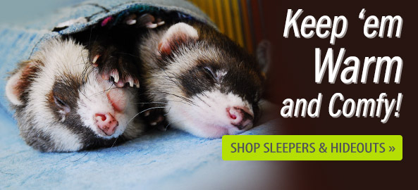

Welcome to the Pick a Pet-Shop!
Ferret

The Ferret is a great choice for small children. Not only is it soft and cuddly, but it is also a great guard dog. It is not a weasel, though it is related to the weasel.
Sloth

The sloth is an incredibly slow animal native to the South American jungles. It is adorable, hilarious looking, and is sure to be the next conversation at your table if you buy one today!
Jango Fett
The Jango Fett is the perfect selection for your bounty hunter needs. This animal requires next to no attention as he will be flying around the galaxy most of the time. Be sure to have a bowl of water out for this pet as he returns late, and leaves early. *Be Advised:* THIS ANIMAL IS DANGEROUS.